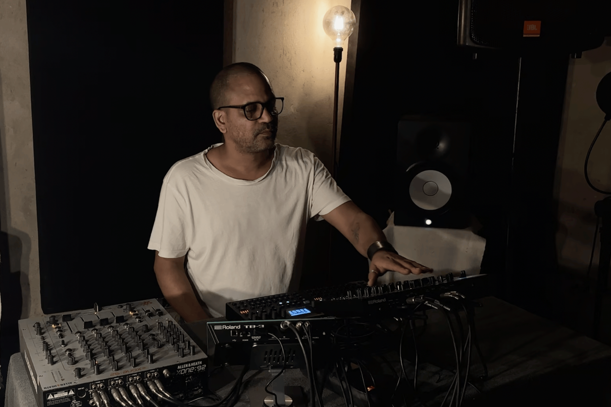
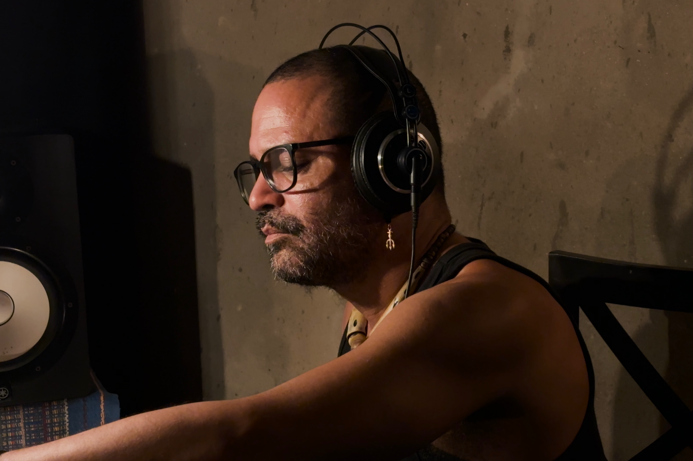
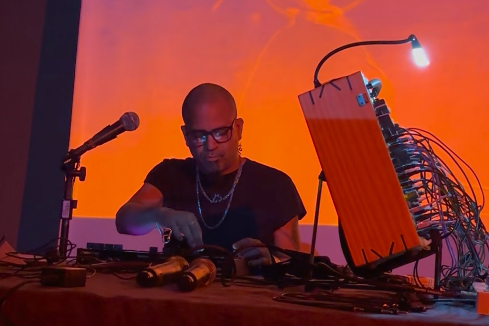

SONA presents UIRÁ DOS REIS
PULSE AND NOISE IN FREEDOM

Born in Ceará and raised in Campo Grande, a suburb of Rio de Janeiro, Uirá dos Reis has lived in Fortaleza (BR) since the age of fifteen, where he has developed a practice that challenges rigid boundaries between artistic disciplines. For more than 25 years, he has moved seamlessly between poetry, music, audiovisual performance, curatorship, and cultural production. His work is grounded in experimental practices from the margins, improvisation as both language and resistance, and the tradition of Brazilian popular song.
In recent years, this multiplicity seems to have sharpened into a new focus. Uirá has been channelling his experience toward electronic music created exclusively with hardware, that is, physical instruments such as samplers, synthesizers, and drum machines. Within this realm, he finds a way to unite three elements that have always been central to his practice: noise, the body, and a Black perspective on the world. His current sound pulses at the intersection of dancefloor rhythm and experimental density, a space where sound becomes both critique and celebration.
It all began with the sound of the word. Coming from a literary background, Uirá dos Reis immersed himself in Fortaleza’s poetry scene in the late 1990s, when oral poetry was emerging as a vibrant way to occupy public spaces and experiment aesthetically in the city. But he soon realised that his texts called for a different sense of time. His poems began to stretch, moving beyond the concise format of collective readings. That’s when he began creating soundscapes for his own texts, using the voice as both instrument and raw material.
On his first album, O Fantástico Mundo do Sr. Hiena e de Suas Criaturas (2001) (The Fantastic World of Mr. Hyena and His Creatures), Uirá records, manipulates, and distorts layers of his own voice, constructing entire tracks without conventional musical instruments. The album is directly influenced by Mike Patton’s Adult Themes for Voice (1996), an experimental work created solely from extreme and unconventional vocal sounds, as well as by vinyl poetry compilations like Carlos Drummond de Andrade’s Antologia Poética (1978), whose austere and measured sound embodies the tension between written word and spoken voice. In this interplay between poetry and noise, the seeds of what would become the core of Uirá’s work were already visible: a practice that traverses media, stretches genres, and places listening at the heart of the sensory experience.
Since then, his work has undergone a process of aesthetic radicalization. Uirá has increasingly opened space for noise, improvisation, and unstable forms of composition. During this period, his ear was shaped by avant-garde post-rock and experimental electronic music, from the anxious energy of no wave to Aphex Twin’s sonic architecture, passing through Sonic Youth’s controlled distortion. Beyond stylistic exploration, this deep dive seems driven by a vital need to find languages capable of sustaining a more visceral, untamed, and, whenever possible, free expression.
This impulse also extended to collaborations. Uirá joined Mirella Hipster, a pioneering noise and free-improvisation band active in Fortaleza from 2007 to 2009, formed by four “non-musicians”: filmmaker brothers Luiz and Ricardo Pretti, philosopher Eduardo Escarpinelli, and Uirá, the poet of the group and manipulator of samples and effects (including guitar, which he used extensively at the time). Within this context, improvisation became a shared language, a way to negotiate between differing perspectives.
Over time, Uirá began to study music more systematically, while never relinquishing the formal freedom that has always guided his practice. It was at this stage that he, as a composer, started approaching Brazilian song more directly, particularly samba and bossa nova. In the interview with SONA, he notes: “I have a lot of influence from samba and Brazilian music, especially the older ones. These genres strongly influence my work, even if it doesn’t always seem obvious”. He adds, “I listened to and studied João Gilberto for a long time while working in noise”.
Uirá’s lifelong familiarity with João Gilberto, from listening to bossa nova at home with his parents in childhood, reflects a refined attention to rhythmic detail and the use of silence as a structural element. These qualities permeate Uirá’s work even in its noisiest moments. As a listener, he has always been attuned to Brazilian popular music; what has changed is how these elements have become integrated into his own compositional voice.
Even in his noise albums, rhythm persists as a subterranean layer, a secret pulse that organizes the chaos. This attention to microstructure, syncopation, offbeats, and the internal swing of tracks connects his work to a less obvious lineage of experimental music, one that, rather than rejecting the body, summons it.
In this sense, a parallel can be drawn with the concept of illbient, coined by DJ Spooky (Paul Miller) in the 1990s to describe a sonic aesthetic that merges ambient, dub, hip hop, and noise. The term itself carries a productive tension: ambient, a genre often associated with ethereal landscapes and Eurocentric whiteness; and ill, a hip-hop term rooted in street slang and subversive power. Spooky advocates for a dissonant, fragmented listening experience that, even when removed from the dancefloor, preserves a sense of rhythmic collage and evokes, obliquely, the Afro-diasporic sonic legacy.
Uirá pursues a similar approach: starting from noise, a field also established as experimental and predominantly white, he embeds it in a listening practice informed by Blackness and the memory of Brazilian popular music. His noisiest tracks may not overtly reference samba, Brazilian funk, or other popular rhythms, but they reveal a deep ear for their internal dynamics. Rhythm here functions as a structural ghost, a subterranean tension guiding the listener even when the sound appears to unravel. In both cases, the body does not disappear; it is summoned in subtler, less obvious way, but no less political.
While noise and collage remain part of his practice, Uirá now directs his work toward danceable electronic music, exploring more pulsed beats and structures designed for the dancefloor. The shift from computer to dedicated hardware, using machines like the Elektron Digitone II and Digitakt II, has also changed his musical approach. For Uirá, working with physical instruments demands a different kind of listening, more tactile, less mediated by generic interfaces. In this sense, Uirá’s use of hardware is also choreographic: his composition unfolds through gesture, through the immediate dialogue between body and machine. The dancefloor, in this context, is not only the destination but also the origin, the source from which the sonic form emerges.

His current performances operate in a hybrid mode. They are live compositions that engage with DJ practice, combining pre-established structures with improvisation, remixing, and real-time layering. This creates an intriguing tension between control and surrender, planning and chance. It is here that his reference genres, techno, Brazilian funk, and samba, intertwine, forming a single affective and political map.
For Uirá, these styles share a common root: “I see techno, funk, and samba as pillars of urban Black music (…) the link between them is obviously Blackness, the celebration of the body, the celebration of partying”. This statement encapsulates a musical vision that understands these genres as expressions of a peripheral culture of resistance, where the body and pleasure occupy a central political role. Here, the party is not an escape but an affirmation. Detroit techno, samba in Rio’s suburban circles, and funk in Brazilian favelas arise in contexts of social inequality while constructing collective forms of expression based on rhythm, dance, and cultural assertion. By weaving these references into his performances and compositions, Uirá creates a network of resonances that affirms a Black and peripheral listening practice, not as distant quotation, but as a living, vital language.
From the same perspective, Uirá explores the relationship between sound and image. In Vermelho e Preto (2025), his most recent audiovisual performance, developed with Gabriel de Sousa and Ivan Timbó, the team manipulates video in real time in response to sound using TouchDesigner. The visuals respond autonomously and sometimes unpredictably, creating a disjunction between what is seen and what is heard, intensifying the performance. The project blends global Black electronic music with traditional Brazilian percussion, such as samba and terreiro rhythms. The interplay of sound and image transforms the performance into a political celebration of Blackness, reaffirming Black culture as a space of resistance and creation, merging tradition and innovation with sensitivity. An album derived from this project is scheduled for release at the end of 2025.
Beyond his work as an artist, Uirá is also an editor, curator, and cultural organiser. In 2010, he founded SuburbanaCo., initially “almost as a joke” against the formalism of the music market. It was just him, alone in a room with an old computer and few resources, creating a label as if constructing an alternate world where his work could exist. Yet what began as provocation quickly became a real platform. SuburbanaCo. grew, established itself as a reference in Fortaleza’s experimental scene, and began releasing works by other local artists. One such release was Vitor Colares’ album Saboteur (2012), issued on vinyl, a still-rare format for emerging artists in the city. At a time when the vinyl revival in Fortaleza was mainly tied to nostalgic reissues, releasing contemporary original work on this medium was itself a political gesture toward the new.
Recorded especially for SONA, the two unreleased tracks accompanying this interview reveal different facets of Uirá’s current practice. Bad-add Volt-Mix moves at a measured pace, with syncopated beats and percussion creating a mysterious atmosphere without losing its danceable swing. The track has a nocturnal, almost cinematic feel, reminiscent of late-night driving soundtracks. Subtle rhythmic details and layers of sound generate tension and anticipation, functioning as a warm-up for something larger, unhurried, yet fully present.
“Ninguém é de Ferro” ("Nobody's Made of Steel"), at 170 bpm, accelerates the pace and embraces a more cerebral, electronic approach. Drawing on IDM and drum and bass influences, it mixes complex patterns with small variations that break repetition. The result is music that works both on the dancefloor and for attentive listening, balancing precision and improvisation.
Together, these tracks showcase Uirá’s experimental spirit, seeking a balance between structure and freedom, repetition and surprise, dance and focused listening. Perhaps the defining feature of this phase is precisely that: creating music that exists in friction, between styles, modes of listening, and shifting temporalities.
For Uirá, freedom has become method. His trajectory suggests that independence and experimentation in the arts are not moral imperatives but tactical positions, choices renewed with every project, every album, every live performance. And perhaps it is precisely by working in this space of instability that his music feels so alive. It insists on existing, despite and through contradictions.